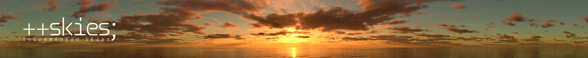
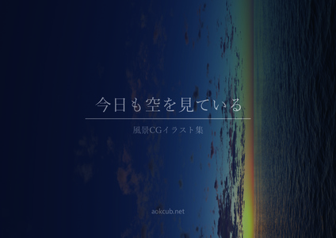
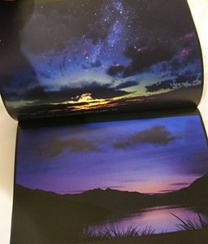
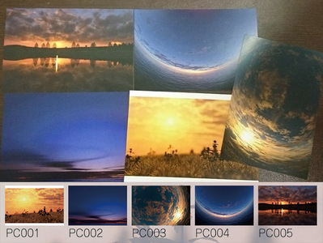
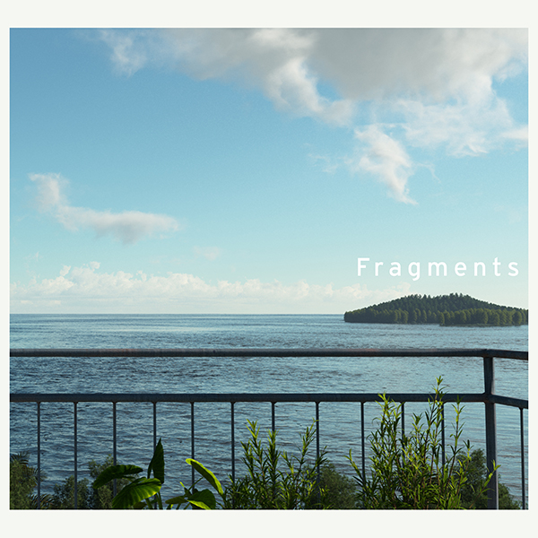
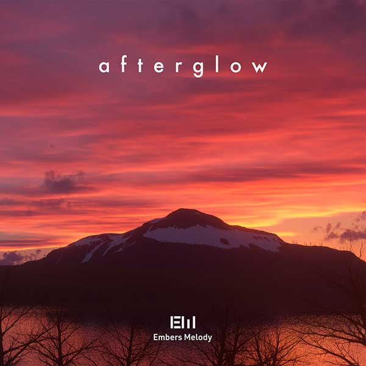
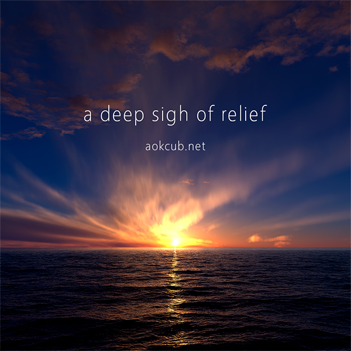
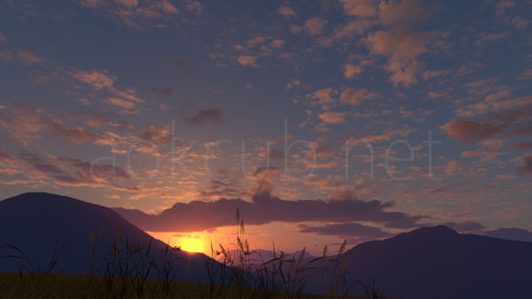
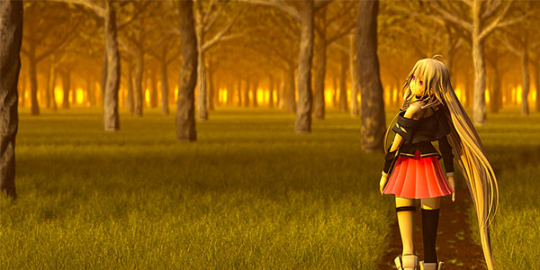

自己紹介
aokcubと申します。
Terragen 4（外部サイト）というソフトウェアを使って風景のCGを制作しています。朝焼け空，夕焼け空を作るのが好きです。
Embers Melody（外部サイト）準所属（2022/10〜）
連絡先
e-mail: aokcub3055 AT gmail.com
Twitter: aokcub_cg
制作物
全天球スカイドームテクスチャ ++skies; (Incremented Skies)

最大32k16kサイズ，HDRフォーマットありの全天球パノラマ素材を制作しています。これまでに映像・ゲーム等幅広く利用いただいています。ぜひご利用ください。
++skies;
景観CG集「今日も空を見ている」 / 景観CGポストカード
Terragenで景観を作り始めて，2017年でちょうど10年になりました。節目の記念にCG集とポストカードを作りました。CG集は全26枚。新作4枚（10月24日時点で未公開のCGを2枚）を含んでいます。
ポストカードは全5種類です。
5月27日のデザインフェスタ45で販売しました。気になった方はぜひ購入していただけると幸いです。
こちらから購入いただけます（外部サイト）：
景観CG集「今日も空を見ている」
景観CGポストカード



景観CG（依頼制作物・共同制作物）
2021-10-17

Embers Melody様
10/31に開催予定のM3 2021秋において
Embers Melody（外部サイト）様より頒布されるコンピレーションアルバム"Fragments"の背景CGを制作しました。
"Fragments"特設サイト（外部サイト）
アセット - Xfrog, MEGASCANS
2020-05-01
ZOOYA様
5/1に開催されたDeeProgBox Vol.14のストリーミング背景を制作しました。（依頼制作物ではなく，制作したものを送付したところ採用いただきました）
2020-03-01

Embers Melody様
M3 2020春で
Embers Melody（外部サイト）様より頒布されたコンピレーションアルバム"afterglow"の背景CGを制作しました。
楽曲は電子データでも販売されています。ぜひ。
植生 - Xfrog, Silva3D
2019-10-27

「a deep sigh of relief（深い安堵のため息）」
依頼でも共同というわけでもないですが，M3 2019秋でSakura Recordz!様より頒布された
締め切りコンピ Re:Lief Compilation 19（外部サイト）に「楽曲以外での参加枠」で参加しました。フリー素材です。
後日通販も予定されており，純利益はすべて台風19号災害募金として寄付されるそうです。ぜひ。
8k8kおよび4k4kサイズの素材を収録しましたが，4k4kのファイルはこちらからダウンロード可能となっています。
a_deep_sigh_of_relief_pub（外部サイト）
2016-11-20, 2016-12-03

株式会社グリニッジクリエイティブマネージメント様
天月 -あまつき-様ワンマンライブ「今夜、君が待つあの丘へ」の演出用背景を制作しました。
使用モデル（敬称略）：
植生 - Xfrog, Silva3D
星空 - 星風夜MMD (tagoshu)
2016-05-14
Shion Hinano（外部サイト）
雛野 しをん様
Soundcloudヘッダイメージを制作しました。
使用モデル（敬称略）：
植生 - Xfrog, Silva3D
鳥 - NWDA
2015-01-28
【IA】黎明【オリジナル】（外部サイト）
kaff様
背景CGを制作しました。
使用モデル（敬称略）：
IAx - mqdl
植生 - Xfrog, Silva3D
建物 - TurboSquid
鳥 - NWDA
2013-11-09

【IA】 After 【オリジナル曲】（外部サイト）
torte様
背景CGを制作しました。
使用モデル（敬称略）：
IAx - mqdl
植生 - Xfrog, Silva3D
景観CG（自主制作）
下記のサイトからご覧ください。（外部サイト）
ニコニコ静画（主要拠点）
Pixiv
ArtStation (2019～)
主な使用ソフトウェア
- Terragen 4 Professional
- Gaea Professional
- Photoshop CC